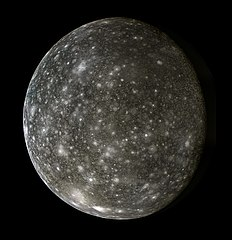
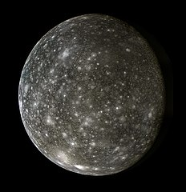
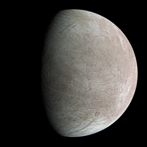
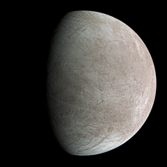
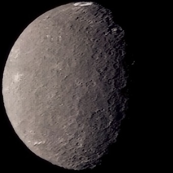
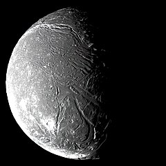
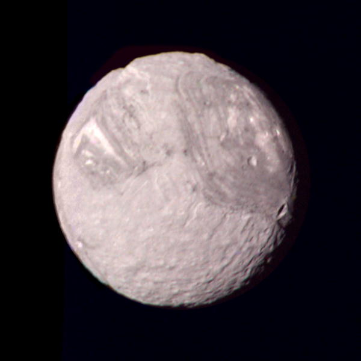
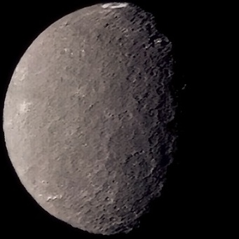
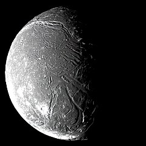
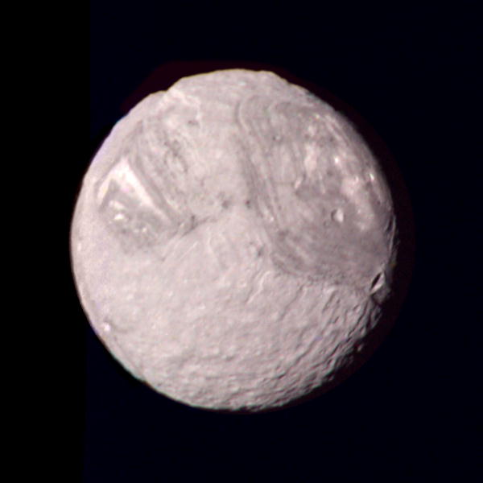

A natural satellite is an astronomical body that orbits a planet, a minor planet, or another satellite. Natural satellites are also called moons.
Six of the eight planets in the Solar System have at least one satellite. Many of the known dwarf planets also have satellites, as well as some asteroids.
History and defining satellites
Earth's Moon is the first known satellite. Because other satellites weren't discovered, the Moon was considered a planet. Galileo's discovery of the Galilean moons of Jupiter lead to the creation of the new class of objects. The first one to call them "satellites" was Johannes Kepler.
The launch of Sputnik marked the first artificial object in Earth's orbits. Satellites of planets had to be distinguished between natural and artificial for the first time.
Satellites of planets
The Moon
The Moon
The Moon is the only natural satellite orbiting Earth. It is also the only natural astronomic body other than Earth that has been visited by people. It is the fifth largest satellite in the Solar System and is the largest relative to it's parent planet. The Moon has no magnetic field, a hydrosphere, or a significant athmosphere.
Satellites of Mars
Mars has two natural satellites - Phobos and Deimos. They are named after the Greek gods of fear and terror respectively. Phobos is the bigger of the two and orbits closer to Mars. Both are small irregularly-shaped bodies and it is believed that they originated from the Asteroid Belt.


Phobos and Deimos are irregularly-shaped satellites of Mars
Galilean satellites
Jupiter has four round moons - Ganymede, Callisto, Io and Europa. They were discovered by Galileo Galilei in 1610. Ganymede is the largest known satellite and is bigger than Mercury. Of the four, Europa is the only one that is smaller than Earth's Moon. Io, Europa and Ganymede are in a 4:2:1 orbital resonance with each other.
 

 

The four Galilean moons - Ganymede, Callisto, Io and Europa
It is speculated that Europa could have a subsurface ocean where extraterrestrial life could exist.
Other Jovian satellites
76 other moons are known to orbit Jupiter. Just like the four Galilean moons, the rest are assigned names of lovers of Zeus (Greek equivalent of Jupiter) and their descendants. They are significantly smaller than the Galilean moons. The biggest of them is Amalthea, and the most massive is Himalia.
Satellites of Saturn
There are 83 moons known to orbit Saturn. The ones discovered earlier were named after Titans and Giants from Greek mythology. Subsequent moons were named after other Greek mythological figures, Celtic and Inuit gods and Norse ice giants.

Titan
The biggest of these is Titan, a satellite bigger than the planet Mercury and smaller than Jupiter's Ganymede. Titan has a thick orange athmosphere composed mostly of nitrogen and methane. Liquid methane lakes are concentrated around the poles, the only possible spots on the surface for them to form.
Other round moons are Rhea, Iapetus, Dione, Tethys, Enceladus and Mimas.


Rhea, Iapetus, Dione, Tethys, Enceladus and Mimas.
The biggest irregularly-shaped satellite is Hyperion and Phoebe is the most massive. Satellites like Atlas, Pan and Daphnis are called shepherd moons. They have distinct equatorial ridges formed from clearing Saturn's rings.
Satellites of Uranus
27 moons are known to orbit Uranus, all named after characters from plays by Shakespeare and "The Rape of the Lock" by Alexander Pope. The biggest five are Titania, Oberon, Umbriel, Ariel and Miranda.

 





Titania, Oberon, Umbriel, Ariel and Miranda
Triton
Satellites of Neptune
There are 14 known Neptunian satellites, named after Greek water deities. The biggest satellite - Triton, is believed to be a dwarf planet caught by the gravitation of Neptune.
The biggest non-planetary satellite in the Solar System is Proteus, which orbits Neptune.

Charon
Satellites of dwarf planets
Pluto has five satellites - Charon, Hydra, Nix, Kerberos and Styx. Names originate from Greek mythology and are related to the underworld. The biggest moon - Charon, named after the ferryman of the underworld, is so big compared to Pluto, that the barycenter of Pluto lies outside of it and both objects are tidally locked to each other.
Eris has one moon - Dysnomia, named after the daemon of lawlessness in Greek mythology.
Haumea has two satellites - Hi'iaka and Namaka, both named after Hawaiian deities.
Makemake has one satellite, refered to as MK2.
Other dwarf planets with satellites include Gonggong with Xiangliu, Quaoar with Weywot and Orcus with Vanth.
Satellites of asteroids
It is possible for asteroids to have satellites. The first one to be discovered was 243 Ida's satellite Dactyl. Some asteroids have more than one satellite. 90 Antiope is a binary system, where the two bodies are of similar sizes.